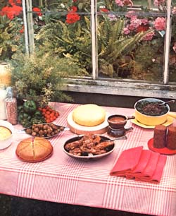
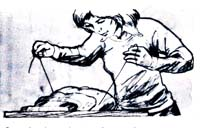

Let's face it: Not enough people get excited about cornmeal anymore. Somehow, the notion has gotten around that cornmeal is [1] bland, [2] difficult to digest, and [3] not a very versatile foodstuff . . . when nothing could be further from the truth! In the first place, cornmeal's delicate flavor and crispy-crunchy texture lend added palatability to nearly any fried food. (After all, what would pan-fried trout be without a cornmeal-batter coating?) In the second place, dried-and-ground corn happens to be high in dietary fiber ... which makes it good for the ole digestive tract. In the third place . . . well, we'll let Mary Rugo take it from here.
It's funny. Practically everyone loves fresh corn. Sit your family down in front of tender, steaming roasting ears right out of the garden and you're almost sure to provoke choruses of "Wow! Corn on the cob!"
Show that same tribe the same ears a few weeks later, however-when every grain has matured into stiff, dry flintand they'll turn up their noses with an "Eat that? Forget it!"
Native Americans and the early white settlers of this continent may have lived whole winters and made 200-mile forced marches while eating little more than cornmeal ... but today's average American generally thinks-if he or she thinks about it at all-that dried corn can only be fed to animals. Cornmeal (dried and ground kernels of corn), in fact, has now become such an insignificant part of our diet that many grocery stores no longer even stock it.
And that's a shame. Because cornmeal-either yellow or white-can be one of the most versatile foods in the kitchen . . . and the key ingredient in some of the most delicious dishes you or I will ever eat!
You could say-I suppose-that the love of cornmeal runs in both sides of our family. I grew up in Alabama (real corn pone country) ... while my husband hails from the mountainous, wheat-poor, north of Italy (where spaghetti is scarce and where country folk cook up a delectable bread-like cornmeal concoction called polenta).
When I was little, my father used to haul white corn in a burlap bag down to the mill on Choccolocco Creek. There as he waited for those slow, water-turned stones to grind the kernels into meal-Daddy would drop a hook or two in the creek's clear, brown water . . . and, if he was lucky, we'd have catfish for supper that night.
I still remember how-when my father got home-we used to clean those fish, roll 'em whole in cornmeal batter, ease the critters into the spittin'-hot fat in an ancient black iron skillet, and watch as they sizzled to crackling brown crispness. On the griddle, meanwhile, we cooked up the crunchy little corncakes we called hush puppies.
My mother probably didn't know it, but by rolling those catfish in cornmeal batter she was following one of the tenets of the great French chef, Escoffier, who believed that all foods should be coated-with crumbs and/or egg, or a mixture of milk, egg, and flour/meal-prior to frying. (According to Escoffier, such a covering browns quickly, thereby [1] trapping steam inside-and tenderizing-the victuals, and [2] acting as "a glove to protect the food within".) Maybe Mom only knew what worked. One thing's for sure: When we sliced through the piping-hot brown crust on those catfish and exposed the flaky, glistening, pearl-white flesh inside ... well, it was clear that Mom and that Frenchman both knew exactly what they were doing!
The cornmeal we got from that Alabama grain mill was coarse ... so coarse that it lent a chewy, nutty, man-you're-really-eating-something quality to every dish it went into. Naturally, corn can also be ground as fine as wheat flout and used in much more delicate recipes.
Coarse or fine, white or yellow (the color depends on the variety of corn), cornmeal is a good source of roughage, the dietary fiber that helps keep our lower digestive tracts in proper working order. It's also a good buy, since lack of demand keeps the price of cornmeal low. (As yet, the moguls of processed food haven't found any way-except for corn chips-to doll this grain up and quadruple its price.)
Of course, you don't have to buy cornmeal: If you grow and dry your own corn, you may be able to take it to a nearby mill to be ground ... orbetter still-you can grind it yourself.
If you'd rather buy the ready-made product, though, your best bet would be to visit any grocery stores in your area which cater to an Italian or Mexican (or southern U.S.) trade. My husband and I used to purchase our cornmeal in bulk-from huge, open barrels displaying grinds of varying degrees of coarseness-at a Chicago grocery with the wonderfully improbable name "Conte di Savoia" (The Count of Savoy). If you can't locate an aristocratic-sounding market-or even a pedestrian-sounding one-near you that carries cornmeal, try a health food store. (Be prepared, though, to pay a premium price at such establishments.)
Cornmeal-like corn itself-is not a good source of complete protein. By serving the meal with cheese, fish., meat, and/or beans of any kind, however, you can complement the cornmeal's incomplete protein with the protein(s) in the other food(s). As a result, you wind up providing your body with more total usable protein than any of the individual foods could've contributed alone. (Frances Moore Lappe' discusses protein complementation at length in her fine book, Diet for a Small Planet - $1.95 from MOTHER'S Bookshelf-and devotes whole chapters to both cornmeal/bean dishes and cornmeal/soy/milk combinations. I highly recommend that you read them.)
At any rate, keep the idea of complementing corn's incomplete proteins with other complete or incomplete proteins in mind when you select side or main dishes to go with the recipes shown below. Serve a complementary meat or bean dish-along with dark green salad leaves (plus, perhaps, some slices of tomato and green pepper)-with the following dishes, and you can enjoy the best of both worlds: made-for-each-other flavors and good nutrition!
Polenta is a moist, crustless bread-like substance made by stirring cornmeal into boiling water and cooking the resulting mush until it thickens and almost solidifies. The hot polenta is then turned out onto a platter or wooden board and sliced and-in this recipe-the resulting slabs are used as cushions on which to lay pieces of subtly seasoned fried chicken which is covered with bronzy-red sauce.
Start the chicken first, or cook it the day before and reheat it when the polenta is almost ready.
2 tablespoons of vegetable oil
2 tablespoons of butter
2 tablespoons of coarsely chopped onion
1 cut-up chicken (or rabbit)
1 to 2 cups of chicken broth
1 teaspoon of salt pepper to taste
1/4 teaspoon of powdered thyme
1/8 teaspoon of dried sage
1 tablespoon of chopped parsley
1 teaspoon of sweet basil
2 tablespoons of chopped celery leaves pinch of allspice pinch of powdered clove
1/2 cup of white wine
1 to 2 tablespoons of tomato paste
Heat the oil and butter together in a heavy skillet, then fry the onion bits until they're golden. Remove the bits and save them. Next, fry the unfloured pieces of chicken in the onion-flavored oil and butter while you dump the cooked onion bits into a small saucepan and simmer them in a cup or two of chicken broth. As the chicken begins to brown, sprinkle all of the spices into the frying pan. (if you don't have some of the herbs, don't worry ... just use the ones you do have.) Now add the wine to the frying pan and let it boil until it almost disappears. While the wine is "reducing", strain the onion pieces out of the chicken broth and discard them ... then stir a tablespoon or two of tomato paste into the broth and pour the resulting red liquid into the frying pan with the chicken. Cover loosely and simmer very gently until the chicken is tender and the sauce has thickened a bit. Serve over sliced polenta.
4 cups of water
1 -1 /2 teaspoons of salt
1-1/2 cups of cornmeal (coarse is best)
Bring three cups of water containing the salt to a rolling boil in a deep, heavy pan. Stir the cornmeal into the remaining cup of cold water, and pour this mixture into the boiling liquid (stirring all the while with a stout wooden spoon). Now lower the heat a bit and continue to cook the polenta for about 45 minutes. You don't need to stir the mushy mixture continuously ... but do give it a good swipe every time you pass the stove. (Since it tends to cook from the bottom up, the cornmeal must be scraped from the bottom of the pan every now and then to prevent it from sticking or scorching, and to aid the thickening of the pan's whole contents.)
By the time the polenta is almost done, it will have formed a "crust" on the bottom that resists your efforts to stir it (this is normal). When the polenta is too thick to stir and smells like bread, it's time to dump the whole thing onto a flat cutting board or wide platter and smooth it into a shallow loaf. (if you've got heatproof hands, you may want to shape the mass with clean fingers and palms. Otherwise-like me-you'll have to use a spatula or the back of a wooden spoon.)
If you want to slice your polenta in the true Italian way, find a piece of strong white thread or light fish line about 18 inches long (see illustration). Hold the thread by its ends and slip it a little ways under the polenta loaf ... then-holding the ends taut-pull the thread up through the polenta. (The loaf is so tender that your thread will slice it beautifully.) Repeat to obtain as many slices as desired.
Serve the pieces of chicken (or rabbit) on top of-or beside-the polenta, layer on plenty of sauce, and enjoy!
I hope you have a well-used iron skillet to bake this in. If not, make a note to acquire one ... and in the meantime, cook this southern-style (sugarless) corn bread in a well-greased 8 X 8 baking pan.
1 cup of coarse, yellow cornmeal
1 cup of flour (white or whole wheat)
2 to 3 tablespoons of powdered milk
4 teaspooms of baking powder
1 -1 /2 teaspoons of salt
1 cup of milk or buttermilk
1 egg
2 tablespoons of vegetable oil
2 to 3 tablespoons of wheat germ
If you're using a well-greased baking pan, preheat the oven to 425° while you sift together all the dry ingredients except the wheat germ (which won't go through the sifter too well), or simply stir all the dry ingredients together thoroughly in a bowl. Then stir in the remaining items-milk, egg, vegetable oil, and wheat germ-and mix until you have a uniformly moist mass. Finally, scrape the batter into the baking pan, smooth it down into the corners, and bake 20 to 25 minutes until the loaf is golden brown.
If you're using an iron skillet (good for you!), put the skillet-containing the vegetable oil-in the oven and let it warm while the oven preheats to 425°. Prepare the batter (minus oil) as above, then-when the corn bread mix is ready and the skillet hot-take the frying pan out of the oven, tilt it back and forth to spread the oil over its surface, pour the excess oil into the batter, stir, and quickly pour the mix into the hot skillet. In 20 to 25 minutes, you'll have a delicious, piping-hot corn bread with a wonderful, brown bottom crust.
Serve this hearty bread with a green salad, and you'll have a filling supper for 6 to 8 people.
6 tablespoons of butter
4-ounce can of whole green chilis (look for the words "roasted and peeled" on the label)
4-ounce jar or can of red pimentos
2 eggs
3/4 cup of milk
1 cup of white or yellow cornmeal
8-ounce can of cream-style corn (or 1 cup of fresh-cut corn kernels)
1/2 pound of cheddar or jack cheese, grated
1-1/2 teaspoons of salt
Preheat the oven to 400°. Cut the butter into chunks, place them in a heavy casserole, then slip the baking dish into the oven. (Caution: You want the butter to melt, but not scorch . . . so keep an eye on it.) Next, chop the chilis and pimentos. Place the eggs and milk in a large mixing bowl, and stir in the cornmeal, corn, chilis, pimentos, and grated cheese. Add the salt and most of the melted butter from the casserole. (Do leave a little butter in the casserole's bottom at this point, and swirl it around to grease the container's sides.)
Now pour the corn bread mix into the hot casserole, and smooth the top of the batter with a spoon. Bake 40 to 50 minutes, or until a toothpick inserted into the center of the bread comes out dry. Serve hot or at room temperature ... it's delectable either way!
I suppose you could call this a successful marriage of southern U.S. and northern Italian cuisines. I call these pups downright scrumptious!
2 eggplants, peeled and sliced
salt
3 to 4 tablespoons of grated onion
3 to 4 tablespoons of fresh parsley, chopped
1/2 cup of cornmeal
1 cup of whole wheat flour
2 teaspoons of baking powder
1 teaspoon of salt oil for deep-frying
Start by cooking the slices of eggplant slowly in a small amount of boiling water (the smaller the better, since eggplants tend to release a lot of liquid of their own). When the slices are very tender, drain them and make a couple passes at them with the salt shaker ... then-when they're cool enough to handle with your bare hands-chop the pieces very fine, or mash them into a pulp. Add the grated onion and chopped parsley to the minced or mashed eggplant.
In a mixing bowl, combine the cornmeal, whole wheat flour, baking powder, and a teaspoon of salt. Then, in another bowl, mix some of the eggplant-onion-parsley blend with some of the dry mixture until you've created a dough that is just firm enough so that you can later form it into walnut-sized balls. (Note: You may end up with an excess either of eggplant or dry ingredients.) When the consistency of the mixture seems about right, cover the bowl and allow the dough to "blend" for half an hour.
Thirty minutes later, dip the eggplant-cornmeal mixture out by the tablespoon and form each spoonful into a ball. Deep-fry the balls in medium-hot (about 350°) oil until golden brown ... then drain them on brown paper, and serve piping hot.
The resulting hush puppies are great with tomato sauce ... and not bad by themselves, either!
1 pound of dried beans (pink or white beans are the most attractive for this dish)
2 quarts of water
1 small onion
2 ribs of celery (with leaves), cut into 1/2" chunks
few sprins of parsley
1 clove of garlic
2 pounds of greens (kale, chard, turnip, or your favorite)
1 quart of water
1-1/2 cups of cornmeal
1-1/2 teaspoons of salt
1 cup of water
1/4 to 3/4 cup of vegetable (or olive) oil
Wash the beans and drop them very slowly-so that the boiling never stops-into two quarts of boiling water. Boil hard for four minutes ... then turn off the heat, cover the pan, and let the beans soak and tenderize. (Depending entirely on your schedule, this can be anywhere from four hours to overnight.) Next, cut the onion in half and add it to the partially tenderized beans. You should also add the celery chunks, the parsley, and the garlic (run a toothpick through the clove of garlic for later identification) at this time. Simmer these ingredients together until the beans are completely soft-one to two hours-then remove and discard the onion, the celery chunks, the parsley, and the clove of garlic. (Note: Do not drain the liquid.)
Break the greens you intend to use into small pieces and cook them in a quart of boiling water until they're very tender. Drain by pouring the liquid from the greens into the beans ... and bring the beans back to a full boil.
In a small bowl, make a paste consisting of 1-1/2 cups of cornmeal, 1-1/2 teaspoons of salt, and a cup of water. When the beans have reached a boil, empty the cornmeal paste into the pot of beans (and stir fiercely while you do this to prevent the cornmeal from becoming lumpy). Simmer the cornmeal-beans mixture for 30 to 40 minutes. (The mixture should thicken considerably during this time, and the cornmeal should-near the end of the simmer-taste well-cooked.)
Now stir in the cooked and drained greens, add 1/4 to 3/4 cup of oil, and stir everything together. Serve hot with sliced ripe tomatoes and tender green onions. (The next night-when you take your farinita out of the refrigerator-cut it into slices and fry them.) Serves 6 to 8.
Whether you use yellow cornmeal or white in this recipe, you're sure to enjoy these crispy-crunchy, extra-tasty cakes.
1 cup of cornmeal (yellow or white)
1/2 cup of flour
2 tablespoons of wheat germ
1 teaspoon of salt 1/4 cup of non-instant powdered milk (optional)
2 eggs
2 teaspoons of baking powder
2 teaspoons of vegetable oil
1-1/2 cups of milk or yogurt
Stir all the ingredients together in a mixing bowl. Add extra milk as necessary to produce a batter that's thin enough to pour easily.
Next, heat a skillet or griddle to about 375°. (To test the hot skillet, drip water onto the bare metal from a spoon. If the beads of liquid dance around for a couple of seconds before disappearing, the temperature is right.) Grease the skillet lightly.
Now pour the batter onto the griddle, and make your pancakes as large or as small as you like. Cook the cakes until [1] no more bubbles appear on their surfaces, [2] they begin to look dry, and [3] their bottoms are golden brown (peek under the edge of one flapjack to see). Then turn them over to cook a minute or two on the other side.
Warning: Pancakes which contain wheat germ and dried milk scorch easily. So don't wander off and leave your cakes to fend for themselves, or they may end up a little too crispy!
When the cornmeal cakes are done, serve 'em at once with sausage or ham. And don't drown these beauties with syrup. Instead, try just a thread of honey across the stack.
1/2 cup of yellow cornmeal
1/4 cup of whole wheat flour
1/4 cup of powdered milk
1/2 teaspoon of salt
2-1/2 teaspoons of baking powder
3/4 cup of chopped dates or raisins
1/2 cup of dark molasses (or a 1:1 mix of molasses and honey)
1/2 cup of wheat germ
1 cup of milk
Stir the cornmeal, whole wheat flour, powdered milk, salt, baking powder, and chopped fruit together in a large mixing bowl. (Make sure each piece of fruit is well coated with the dry mixture.) Then add the remaining ingredients and stir thoroughly.
Grease a pair of one-pint (16-ounce) cans or widemouthed canning jars and divide the dough equally between them. Cover the doughfilled containers either with lids (loose ... not tightened down) or foil secured by string tied around the tops of the cans. Then place the jars on a rack inside a large pot, set the pot on the stove, and add enough boiling water around the dough-filled containers to halfimmerse them in the scalding liquid. Finally, cover the pot and keep the water boiling for 1-1/2 to 2 hours. The bread is done when it's solid (not runny) to the touch.
You'll find that warm brown bread-served with a mild-flavored, soft cheese (such as ricotta, cream, or cottage cheese)-makes an exquisite breakfast or lunch ... and a pretty good dessert, too.
Please note that there's nothing at all "rigid" about any of these recipes. If you want to substitute coarse cornmeal for fine, or yellow for white-or try any other changes-go right ahead. There's plenty of room for experimentation.
The important thing is buy some cornmeal (or grind some yourself) and start cooking with it. I'm confident you'll find that-far from being the bland, gritty, useless powder you imagined-corn meal is actually a joy to work with . . . and that foods made from it are a joy to eat!
|
 |
 |
|